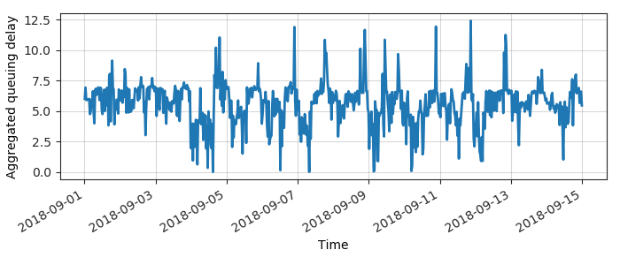
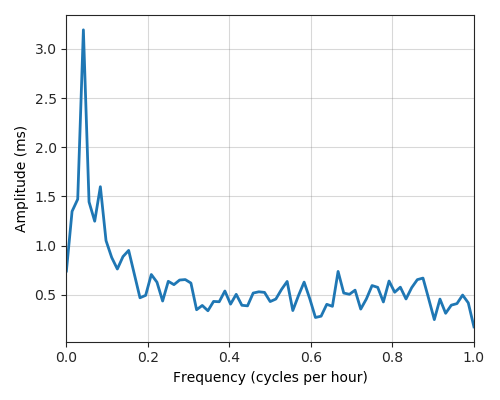
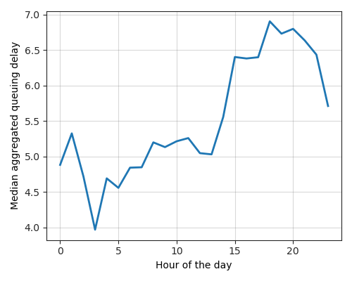

---
layout: default
title: Last-mile delay survey / 2018-09-01 / AS25441
---
AS25441, IBIS-AS Imagine Group Ltd., IE
Summary
- Daily last-mile fluctuations: severe
- Number of probes: 3
- APNIC eyeball rank: 2272
- Daily fluctuations: True
- Main frequency: 0.0417
- Average peak-to-peak amplitude: 3.19ms
Aggregated last-mile queuing delay

Periodogram

24H profile

Probes' last-mile RTT